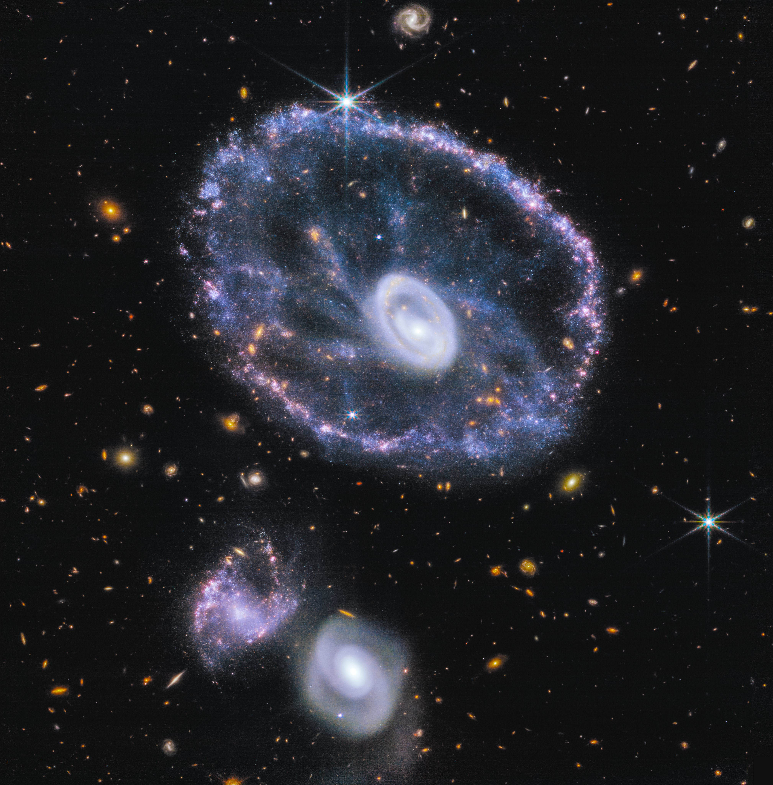
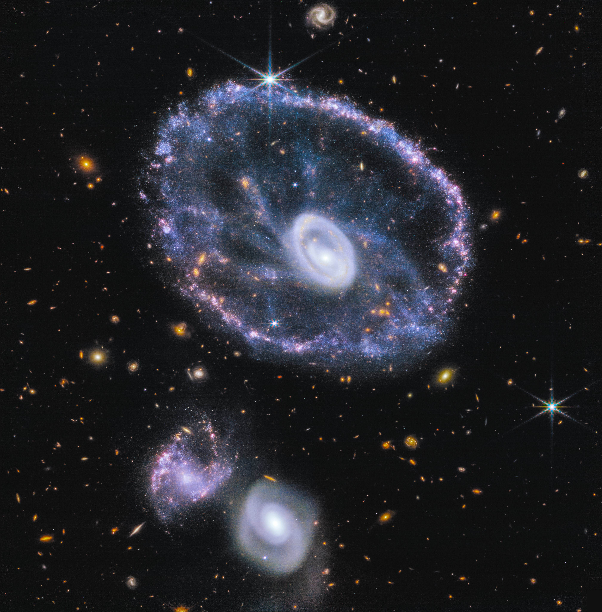
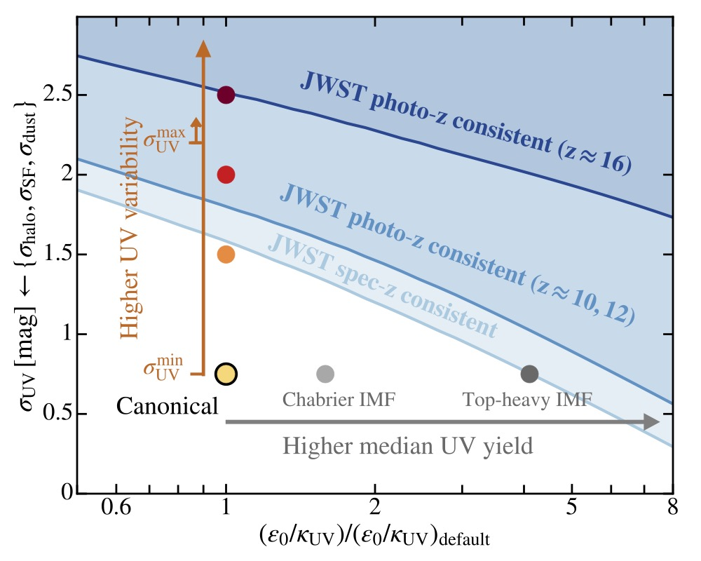
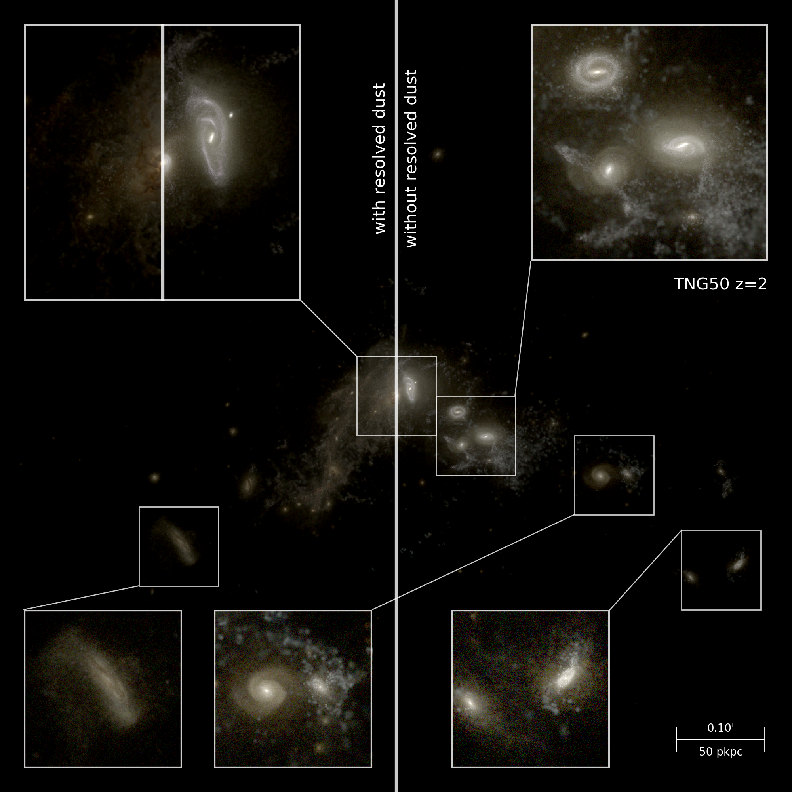
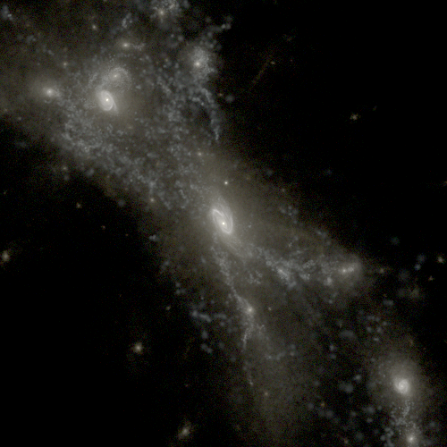
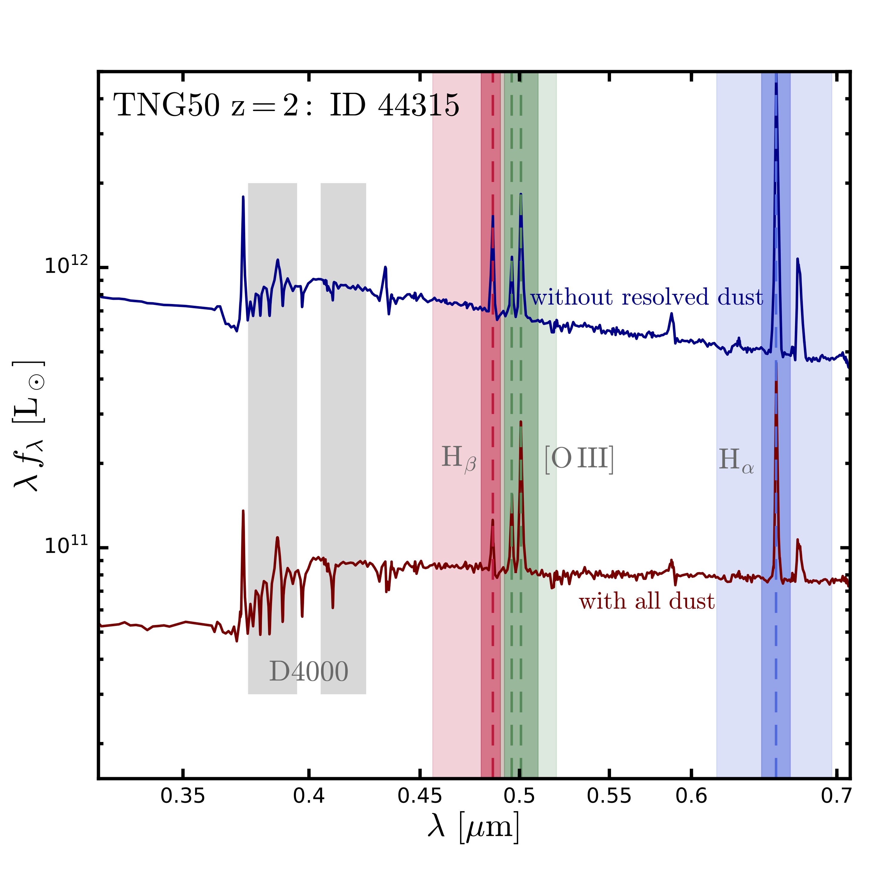
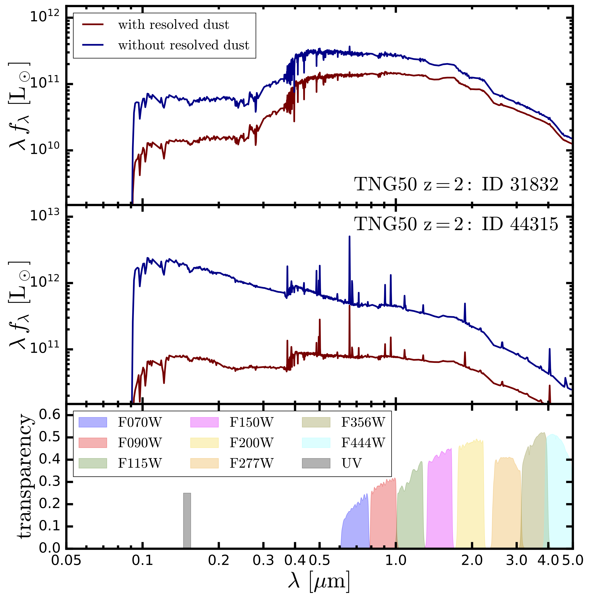
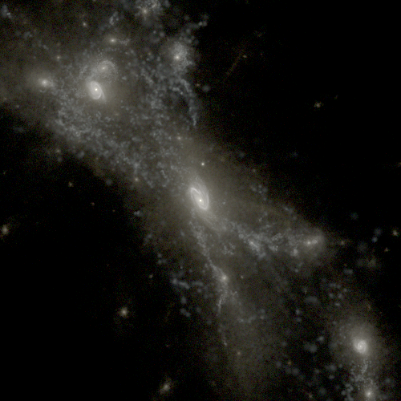
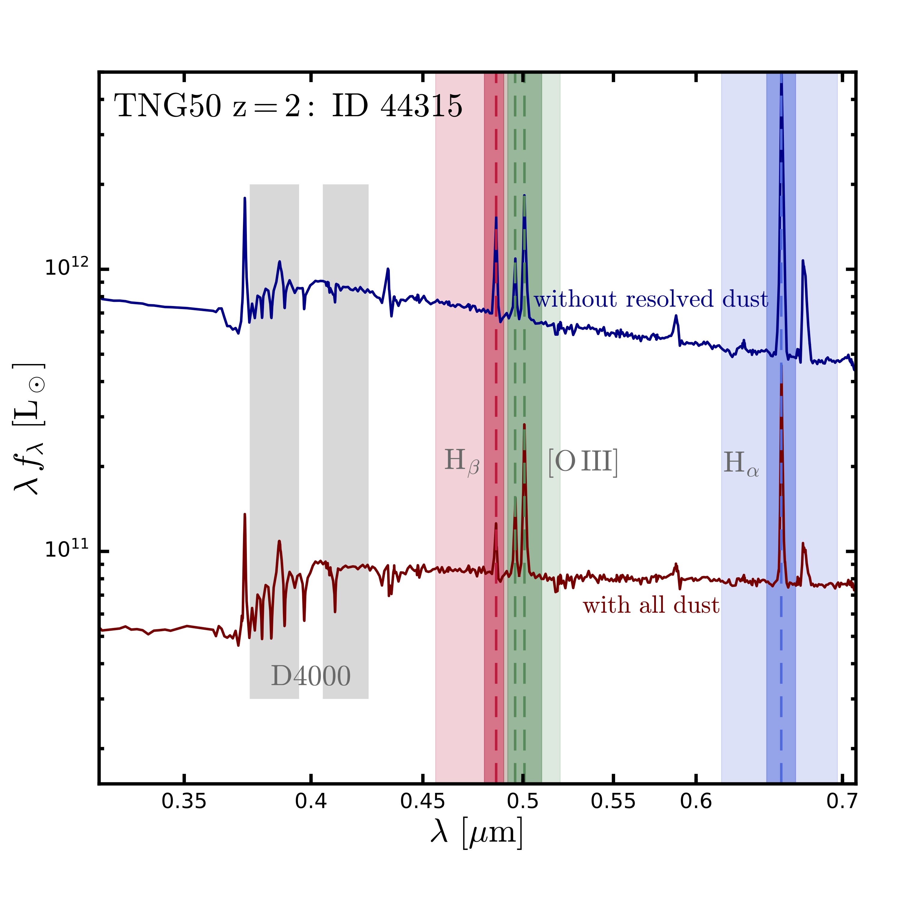
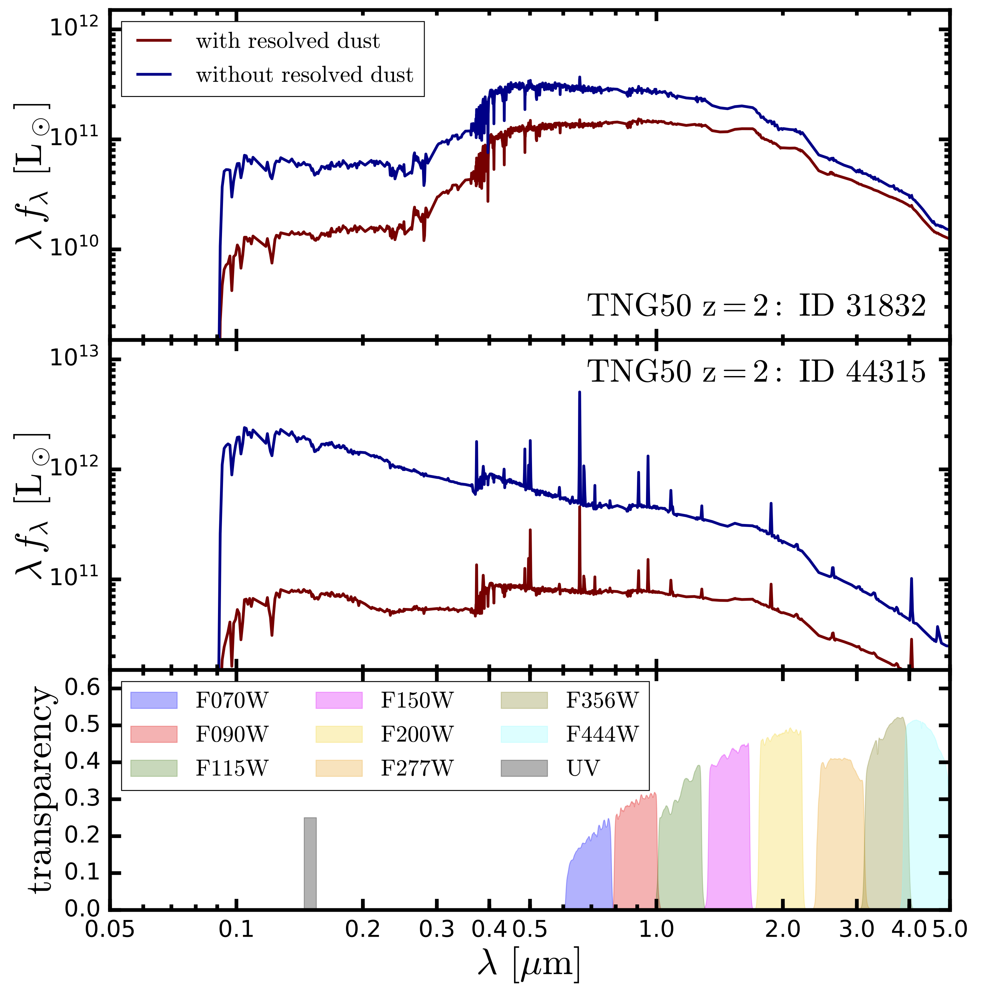

High-redshift galaxies in light of JWST
High-redshift galaxies will obviously be a hot topic of astrophysical research in the next decade, with the development of key observational instruments (e.g. JWST, Roman). These open up new opportunities in understanding the formation and evolution of first generation of galaxies in the Universe, as well as new channels to study and constrain fundamental physics.
Relavant Projects
-
UV variability explains the large abundance of bright galaxies at cosmic dwan
During its Early-Science and Cycle-1 observations, the JWST uncovered an unexpectedly high number of UV-bright galaxies at the cosmic dawn. This discovery challenges many established theoretical models of galaxy formation. In this work, we suggested that the overlooked variability in galaxy UV luminosity, due to e.g. episodic star formation, may resolve this tension. Our proposition is compatible with the current galaxy formation framwork and is grounded in plausible physical phenomena. Since its introduction, this theory has garnered significant interest in the scientific community, with numerous groups exploring its validity. Working in tandem with the FIRE simulation group, we have become the first to verify the effectiveness of this concept in the work led by Dr. Guochao Sun. This is also the first simulation that reproduce the abundance of UV bright galaxies found by JWST.
 -
High-redshift JWST predictions from IllustrisTNG
This is a series of papers on high-redshift galaxies, based on the IllustrisTNG simulation, the dust radiative transfer calculation using SKIRT and a dust model calibrated with compiled UV luminosity function data at z=4-10. In Paper I, we presented this framework for mock JWST predictions from simulations, and made predictions on the UV luminosity functions, the JWST NIRCam apparent band luminosity functions. In Paper II, we made predictions on the emission line luminosity functions (Hα, O[III]), spectral indices (D4000) and dust attenuation curves of high-redshift galaxies. In Paper III, we extended the prediction to FIR wavelengths, with a more realistic treatment of dust grain size distribution and non-local thermal effects. We presented the NIR and FIR galaxy luminosity functions, as well as the JWST MIRI band luminosity functions.
 


 -
Epoch-of-Reionization galaxies in alternative dark matter models in the THESAN simulations
Early Universe is also an interesting test ground for dark matter physics. Many models for dark matter imply modifications to the small-scale power spectrum of cosmic density fluctuations, which will inevitably affect the assembly of early galaxies. Recently, we have experimented the warm dark matter and the SIDM model with dark acoustic oscillations in a small-volume simulation within the THESAN simulation framework. Notably, the simulations include the recipe for sourcing ionizing photons, on-the-fly radiative transfer calculations and a hydrogen chemical-solver for reionization, which allow us to study the interplay between non-equilibrium reionization process and alternative dark matter physics.
-
Morphological idenfication of merging galaxies powered by CNN
Another application of the dust radiative transfer post-processing pipeline we built is producing high-quality, realistic mock images for high redshift galaxies. Below are examplar images we generated in Paper I of the series mentioned in the first bullet point. On the left is a z=1 galaxy in the JWST NIRCam F070W, F090W, F115W bands, and on the right is a z=2 galaxy in F115W, F150W, F200W bands. We are currently generating similar mock images for merging galaxies selected at z<1, with modeling of background noise and PSF convolution. The images will be used to train a multi-channel convolution neural network (CNN) for merger identification with real JWST images.